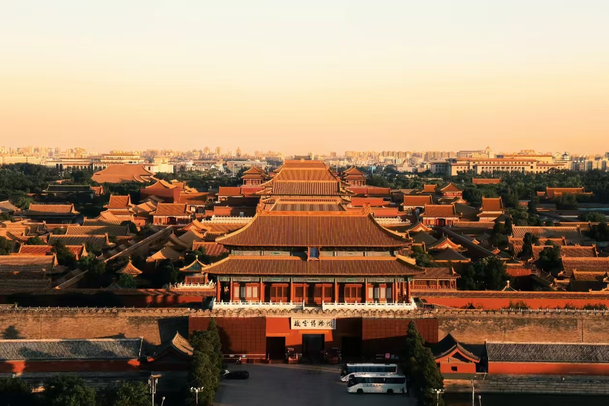

北京著名景点

故宫博物院
旧称紫禁城，是明清两代的皇家宫殿，世界上现存规模最大、保存最为完整的木质结构古建筑之一。
查看详情 →
万里长城
世界文化遗产，中国古代的军事防御工程，"不到长城非好汉"，是北京必游景点之一。
查看详情 →
颐和园
中国清朝时期皇家园林，以昆明湖、万寿山为基址，是保存最完整的一座皇家行宫御苑。
查看详情 →
天坛公园
明清两代帝王祭祀皇天、祈五谷丰登的场所，是中国现存最大的古代祭祀性建筑群。
查看详情 →
天安门广场
世界上最大的城市广场，是中华人民共和国的象征，每天清晨的升旗仪式庄严肃穆。
查看详情 →
南锣鼓巷
北京最古老的街区之一，保存着元大都时期的胡同风貌，是老北京文化的代表。
查看详情 →